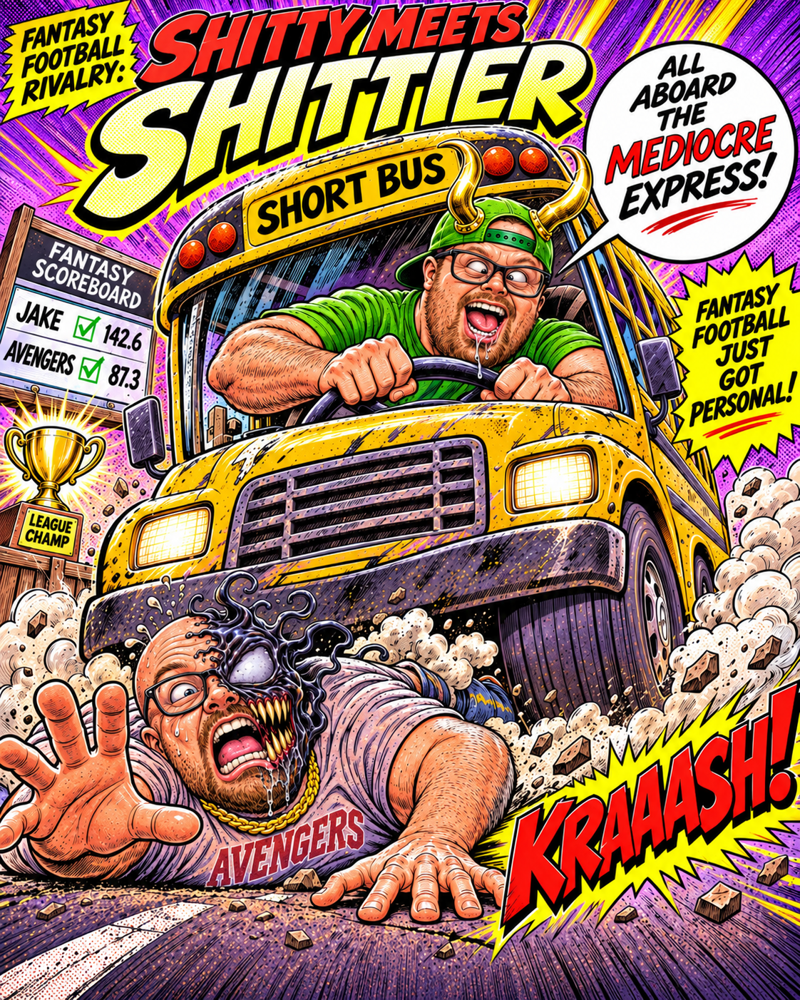

THE LESSER OF TWO SHITS
Jake defeats Hunter. Nobody's impressed.

After ten weeks of fantasy football, there are contenders, there are pretenders, and then there's the bus route nobody wants to admit they're on.
In the latest edition of the Short Bus Showdown, Jake's Loki Down Bad ran over Hunter's Hurts Venom Inside Her, 164.02–142.46. A commanding 21.56-point victory in a game that somehow produced a winner and still felt like both managers should apologize.
ONE MAN'S TRIUMPH. ANOTHER MAN'S BUS STOP.
Jake finally had a Sunday where his lineup looked like it understood the assignment. He scored 164.02, which is legitimately good. Naturally, the occasion demanded a victory parade, complete with a tiny yellow bus and enough confidence to make everyone forget the rest of his season.
Hunter didn't even have a disaster. 142.46 points is a respectable total. It just wasn't enough against a man whose team decided to be competent for the exact afternoon it would be funniest.
| THE EVIDENCE | HUNTER | JAKE |
|---|---|---|
| Season wins | 3 | 2 |
| Points scored | 1,177.18 | 1,245.64 |
| Points per game | 117.72 | 124.56 |
| Below league average / week | −24.99 | −18.14 |
| All-play record* | 16–54 | 18–52 |
| All-play win rate | 22.9% | 25.7% |
| Weeks below 120 points | 5 / 10 | 5 / 10 |
| Weeks below 100 points | 2 / 10 | 2 / 10 |
| Week 10 | 142.46 | 164.02 |
JAKE IS WORSE AT WINNING.
DIFFERENT PATHS. SAME SEWER.
THE GREAT MEDIOCRITY PARADE
The cruelest part? Jake gets bragging rights. Not a championship. Not a trophy. Just the legal authority to remind Hunter that, on this particular Sunday, Loki Down Bad was the less embarrassing operation.
Some rivalries are defined by decades of greatness. This one is defined by a bus pulling up, the doors opening, and somebody yelling, “GET IN, LOSER. WE WON.”
THE BUGLE VERDICT
Jake wins. Hunter loses. The bus remains undefeated. The scoreboard says 164.02–142.46. History will record it as a 21.56-point beating. The league will remember that both men were way too excited to be involved.